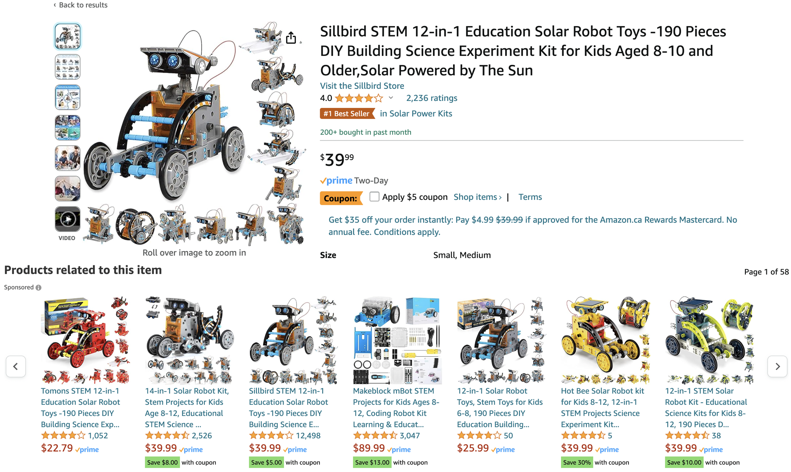

Lecture 17: Recommender Systems#
UBC 2024-25
Imports#
import os
import random
import sys
import time
import numpy as np
sys.path.append(os.path.join(os.path.abspath(".."), "code"))
import matplotlib.pyplot as plt
from plotting_functions import *
from plotting_functions_unsup import *
from sklearn.decomposition import PCA
from sklearn.model_selection import cross_validate, train_test_split
from sklearn.preprocessing import StandardScaler
plt.rcParams["font.size"] = 16
import matplotlib.cm as cm
# plt.style.use("seaborn")
%matplotlib inline
pd.set_option("display.max_colwidth", 0)
DATA_DIR = os.path.join(os.path.abspath(".."), "data/")
Learning outcomes #
From this lecture, students are expected to be able to:
State the problem of recommender systems.
Describe components of a utility matrix.
Create a utility matrix given ratings data.
Describe a common approach to evaluate recommender systems.
Implement some baseline approaches to complete the utility matrix.
Explain the idea of collaborative filtering.
Formulate the rating prediction problem as a supervised machine learning problem.
Create a content-based filter given ratings data and item features to predict missing ratings in the utility matrix.
Explain some serious consequences of recommendation systems.
❓❓ Questions for you#
What percentage of watch time on YouTube do you think comes from recommendations?
(A) 50%
(B) 60%
(C) 20%
(D) 90%
This question is based on this source. The statistics might have changed now.
Recommender systems intro and motivation#
What is a recommender system?#
A recommender or a recommendation system recommends a particular product or service to users they are likely to consume.

Example: Recommender Systems
A user goes to Amazon to buy products.
Amazon has some information about the user. They also have information about other users buying similar products.
What should they recommend to the user, so that they buy more products?
There’s no “right” answer (no label).
The whole idea is to understand user behavior in order to recommend them products they are likely to consume.
Why should we care about recommendation systems?#
Almost everything we buy or consume today is in some way or the other influenced by recommendation systems.
Music (Spotify), videos (YouTube), news, books and products (Amazon), movies (Netflix), jokes, restaurants, dating , friends (Facebook), professional connections (LinkedIn)
Recommendation systems are at the core of the success of many companies such as Amazon and Netflix.

Recommendation systems are often presented as powerful tools that significantly reduce the effort users need to put in finding items, effectively mitigating the problem of information overload.
This is more or less true in many contexts. Consider, for instance, the experience of shopping an umbrella on Amazon without the help of recommendations or any specific ranking of products.
In the absence of a recommendation system, users would be faced with the daunting task of sifting through thousands of available products to find the one that best suits their needs.

That said, we should always be mindful of the drawbacks of relying heavily on recommender systems.
For example, these systems tend to recommend articles and products that are similar to those a user has previously interacted with or those their friends like.
While this can improve user experience by presenting more of what the system predicts the user will like, it can also lead to a phenomenon known as “filter bubbles”.
This effect narrows a user’s exposure to diverse viewpoints and information. Such a narrowing of perspective can be detrimental, particularly in the context of scientific research or political discourse, where exposure to a wide range of perspectives is crucial.
Data and main approaches#
What kind of data we need to build recommendation systems?
Customer purchase history data (We worked with it last week.)
User-item interactions (e.g., ratings or clicks) (most common)
Features related to items or users
Main approaches
Collaborative filtering
“Unsupervised” learning
We only have labels \(y_{ij}\) (rating of user \(i\) for item \(j\)).
We learn latent features.
Content-based recommenders (today’s focus)
Supervised learning
Extract features \(x_i\) of users and/or items building a model to predict rating \(y_i\) given \(x_i\).
Apply model to predict for new users/items.
Hybrid
Combining collaborative filtering with content-based filtering
Recommender systems problem#
Problem formulation#
Most often the data for recommender systems come in as interactions between a set of items and a set of users.
We have two entities: \(N\) users and \(M\) items.
Users are consumers.
Items are the products or services offered.
E.g., movies (Netflix), books (Amazon), songs (spotify), people (tinder)
A utility matrix is the matrix that captures interactions between \(N\) users and \(M\) items.
The interaction may come in different forms:
ratings, clicks, purchases
Below is a toy utility matrix. Here \(N\) = 6 and \(M\) = 5.
Each entry \(y_{ij}\) (\(i^{th}\) row and \(j^{th}\) column) denotes the rating given by the user \(i\) to item \(j\).
We represent users in terms of items and items in terms of users.

The utility matrix is very sparse because usually users only interact with a few items.
For example:
all Netflix users will have rated only a small percentage of content available on Netflix
all amazon clients will have rated only a small fraction of items among all items available on Amazon
What do we predict?
Given a utility matrix of \(N\) users and \(M\) items, complete the utility matrix. In other words, predict missing values in the matrix.
Once we have predicted ratings, we can recommend items to users they are likely to rate higher.
Note: rating prediction \(\neq\) Classification or regression
In classification or regression:
We have \(X\) and targets for some rows in \(X\).
We want to predict the last column (target column).
In rating prediction
Ratings data has many missing values in the utility matrix. There is no special target column. We want to predict the missing entries in the matrix.
Since our goal is to predict ratings, usually the utility matrix is referred to as \(Y\) matrix.
Creating utility matrix#
Let’s work with the following toy example.
toy_ratings = pd.read_csv(DATA_DIR + "toy_ratings.csv")
toy_ratings
| user_id | movie_id | rating | |
|---|---|---|---|
| 0 | Sam | Lion King | 4 |
| 1 | Sam | Jerry Maguire | 4 |
| 2 | Sam | Roman Holidays | 5 |
| 3 | Sam | Downfall | 1 |
| 4 | Eva | Titanic | 2 |
| 5 | Eva | Jerry Maguire | 1 |
| 6 | Eva | Inception | 4 |
| 7 | Eva | Man on Wire | 5 |
| 8 | Eva | The Social Dilemma | 5 |
| 9 | Pat | Titanic | 3 |
| 10 | Pat | Lion King | 4 |
| 11 | Pat | Bambi | 4 |
| 12 | Pat | Cast Away | 3 |
| 13 | Pat | Jerry Maguire | 5 |
| 14 | Pat | Downfall | 2 |
| 15 | Pat | A Beautiful Mind | 3 |
| 16 | Jim | Titanic | 2 |
| 17 | Jim | Lion King | 3 |
| 18 | Jim | The Social Dilemma | 5 |
| 19 | Jim | Malcolm x | 4 |
| 20 | Jim | Man on Wire | 5 |
user_key = "user_id"
item_key = "movie_id"
def get_stats(ratings, item_key="movie_id", user_key="user_id"):
print("Number of ratings:", len(ratings))
print("Average rating: %0.3f" % (np.mean(ratings["rating"])))
N = len(np.unique(ratings[user_key]))
M = len(np.unique(ratings[item_key]))
print("Number of users (N): %d" % N)
print("Number of items (M): %d" % M)
print("Fraction non-nan ratings: %0.3f" % (len(ratings) / (N * M)))
return N, M
N, M = get_stats(toy_ratings)
Number of ratings: 21
Average rating: 3.524
Number of users (N): 4
Number of items (M): 12
Fraction non-nan ratings: 0.438
Let’s construct utility matrix with
number of usersrows andnumber of itemscolumns from the ratings data.
Note we are constructing a non-sparse matrix for demonstration purpose here. In real life it’s recommended that you work with sparse matrices.
user_mapper = dict(zip(np.unique(toy_ratings[user_key]), list(range(N))))
item_mapper = dict(zip(np.unique(toy_ratings[item_key]), list(range(M))))
user_inverse_mapper = dict(zip(list(range(N)), np.unique(toy_ratings[user_key])))
item_inverse_mapper = dict(zip(list(range(M)), np.unique(toy_ratings[item_key])))
Why do we need all these mappers?
We want to store the rating for user \(i\) and item \(j\) at \(Y[i,j]\) location in the utility matrix.
So we define
user_mapperanditem_mapperwhich map user and item ids to indices.Once we have predicted ratings for users and items, we want to be able to map it to the original user and item ids so that we recommend the right product to the right user.
So we have
user_inverse_mapperanditem_inverse_mapperwhich map indices to original user and item ids.
user_key = "user_id"
item_key = "movie_id"
user_mapper = dict(zip(np.unique(toy_ratings[user_key]), list(range(N))))
item_mapper = dict(zip(np.unique(toy_ratings[item_key]), list(range(M))))
user_inverse_mapper = dict(zip(list(range(N)), np.unique(toy_ratings[user_key])))
item_inverse_mapper = dict(zip(list(range(M)), np.unique(toy_ratings[item_key])))
def create_Y_from_ratings(data, N, M):
Y = np.zeros((N, M))
Y.fill(np.nan)
for index, val in data.iterrows():
n = user_mapper[val[user_key]]
m = item_mapper[val[item_key]]
Y[n, m] = val["rating"]
return Y
Y_mat = create_Y_from_ratings(toy_ratings, N, M)
Y_mat.shape
(4, 12)
pd.DataFrame(Y_mat)
| 0 | 1 | 2 | 3 | 4 | 5 | 6 | 7 | 8 | 9 | 10 | 11 | |
|---|---|---|---|---|---|---|---|---|---|---|---|---|
| 0 | NaN | NaN | NaN | NaN | 4.0 | 1.0 | NaN | NaN | 5.0 | NaN | 5.0 | 2.0 |
| 1 | NaN | NaN | NaN | NaN | NaN | NaN | 3.0 | 4.0 | 5.0 | NaN | 5.0 | 2.0 |
| 2 | 3.0 | 4.0 | 3.0 | 2.0 | NaN | 5.0 | 4.0 | NaN | NaN | NaN | NaN | 3.0 |
| 3 | NaN | NaN | NaN | 1.0 | NaN | 4.0 | 4.0 | NaN | NaN | 5.0 | NaN | NaN |
Y = create_Y_from_ratings(toy_ratings, N, M)
utility_mat = pd.DataFrame(Y, columns=item_mapper.keys(), index=user_mapper.keys())
utility_mat
| A Beautiful Mind | Bambi | Cast Away | Downfall | Inception | Jerry Maguire | Lion King | Malcolm x | Man on Wire | Roman Holidays | The Social Dilemma | Titanic | |
|---|---|---|---|---|---|---|---|---|---|---|---|---|
| Eva | NaN | NaN | NaN | NaN | 4.0 | 1.0 | NaN | NaN | 5.0 | NaN | 5.0 | 2.0 |
| Jim | NaN | NaN | NaN | NaN | NaN | NaN | 3.0 | 4.0 | 5.0 | NaN | 5.0 | 2.0 |
| Pat | 3.0 | 4.0 | 3.0 | 2.0 | NaN | 5.0 | 4.0 | NaN | NaN | NaN | NaN | 3.0 |
| Sam | NaN | NaN | NaN | 1.0 | NaN | 4.0 | 4.0 | NaN | NaN | 5.0 | NaN | NaN |
Rows represent users.
Columns represent items (movies in our case).
Each cell gives the rating given by the user to the corresponding movie.
Users are features for movies and movies are features for users.
Our goal is to predict missing entries in the utility matrix.
Evaluation#
We’ll try a number of methods to fill in the missing entries in the utility matrix.
Although there is no notion of “accurate” recommendations, we need a way to evaluate our predictions so that we’ll be able to compare different methods.
Although we are doing unsupervised learning, we’ll split the data and evaluate our predictions as follows.
Data splitting
We split the ratings into train and validation sets.
It’s easier to split the ratings data instead of splitting the utility matrix.
Don’t worry about
y; we’re not really going to use it.
X = toy_ratings.copy()
y = toy_ratings[user_key]
X_train, X_valid, y_train, y_valid = train_test_split(
X, y, test_size=0.2, random_state=42
)
X_train.shape, X_valid.shape
((16, 3), (5, 3))
Now we will create utility matrices for train and validation splits.
train_mat = create_Y_from_ratings(X_train, N, M)
valid_mat = create_Y_from_ratings(X_valid, N, M)
train_mat.shape, valid_mat.shape
((4, 12), (4, 12))
(len(X_train) / (N * M)) # Fraction of non-nan entries in the train set
0.3333333333333333
(len(X_valid) / (N * M)) # Fraction of non-nan entries in the valid set
0.10416666666666667
pd.DataFrame(train_mat)
| 0 | 1 | 2 | 3 | 4 | 5 | 6 | 7 | 8 | 9 | 10 | 11 | |
|---|---|---|---|---|---|---|---|---|---|---|---|---|
| 0 | NaN | NaN | NaN | NaN | 4.0 | 1.0 | NaN | NaN | 5.0 | NaN | NaN | 2.0 |
| 1 | NaN | NaN | NaN | NaN | NaN | NaN | NaN | 4.0 | 5.0 | NaN | 5.0 | 2.0 |
| 2 | NaN | 4.0 | 3.0 | 2.0 | NaN | 5.0 | 4.0 | NaN | NaN | NaN | NaN | 3.0 |
| 3 | NaN | NaN | NaN | 1.0 | NaN | NaN | NaN | NaN | NaN | 5.0 | NaN | NaN |
pd.DataFrame(valid_mat)
| 0 | 1 | 2 | 3 | 4 | 5 | 6 | 7 | 8 | 9 | 10 | 11 | |
|---|---|---|---|---|---|---|---|---|---|---|---|---|
| 0 | NaN | NaN | NaN | NaN | NaN | NaN | NaN | NaN | NaN | NaN | 5.0 | NaN |
| 1 | NaN | NaN | NaN | NaN | NaN | NaN | 3.0 | NaN | NaN | NaN | NaN | NaN |
| 2 | 3.0 | NaN | NaN | NaN | NaN | NaN | NaN | NaN | NaN | NaN | NaN | NaN |
| 3 | NaN | NaN | NaN | NaN | NaN | 4.0 | 4.0 | NaN | NaN | NaN | NaN | NaN |
train_mathas only ratings from the train set andvalid_mathas only ratings from the valid set.During training we assume that we do not have access to some of the available ratings. We predict these ratings and evaluate them against ratings in the validation set.
Questions for you
How do train and validation utility matrices differ?
Why are utility matrices for train and validation sets are of the same shape?
Now that we have train and validation sets, how do we evaluate our predictions?
You can calculate the error between actual ratings and predicted ratings with metrics of your choice.
Most common ones are MSE or RMSE.
The
errorfunction below calculates RMSE andevaluatefunction prints train and validation RMSE.Lower RMSE \(\rightarrow\) predicted ratings are closer to the actual ratings
def error(X1, X2):
"""
Returns the root mean squared error.
"""
return np.sqrt(np.nanmean((X1 - X2) ** 2))
def evaluate(pred_X, train_X, valid_X, model_name="Global average"):
print("%s train RMSE: %0.2f" % (model_name, error(pred_X, train_X)))
print("%s valid RMSE: %0.2f" % (model_name, error(pred_X, valid_X)))
Baseline Approaches#
Let’s first try some simple approaches to predict missing entries.
Global average baseline
Per-user average baseline
Per-item average baseline
Average of 2 and 3
Take an average of per-user and per-item averages.
I’ll show you 1. and 5. You’ll explore 2., 3., and 4. in the lab.
Global average baseline#
Let’s examine RMSE of the global average baseline.
In this baseline we predict everything as the global average rating.
avg = np.nanmean(train_mat)
pred_g = np.zeros(train_mat.shape) + avg
pd.DataFrame(pred_g).head()
| 0 | 1 | 2 | 3 | 4 | 5 | 6 | 7 | 8 | 9 | 10 | 11 | |
|---|---|---|---|---|---|---|---|---|---|---|---|---|
| 0 | 3.4375 | 3.4375 | 3.4375 | 3.4375 | 3.4375 | 3.4375 | 3.4375 | 3.4375 | 3.4375 | 3.4375 | 3.4375 | 3.4375 |
| 1 | 3.4375 | 3.4375 | 3.4375 | 3.4375 | 3.4375 | 3.4375 | 3.4375 | 3.4375 | 3.4375 | 3.4375 | 3.4375 | 3.4375 |
| 2 | 3.4375 | 3.4375 | 3.4375 | 3.4375 | 3.4375 | 3.4375 | 3.4375 | 3.4375 | 3.4375 | 3.4375 | 3.4375 | 3.4375 |
| 3 | 3.4375 | 3.4375 | 3.4375 | 3.4375 | 3.4375 | 3.4375 | 3.4375 | 3.4375 | 3.4375 | 3.4375 | 3.4375 | 3.4375 |
evaluate(pred_g, train_mat, valid_mat, model_name="Global average")
Global average train RMSE: 1.41
Global average valid RMSE: 0.83
\(k\)-nearest neighbours imputation#
Can we try \(k\)-nearest neighbours type imputation?
Impute missing values using the mean value from \(k\) nearest neighbours found in the training set.
Calculate distances between examples using features where neither value is missing.
pd.DataFrame(train_mat)
| 0 | 1 | 2 | 3 | 4 | 5 | 6 | 7 | 8 | 9 | 10 | 11 | |
|---|---|---|---|---|---|---|---|---|---|---|---|---|
| 0 | NaN | NaN | NaN | NaN | 4.0 | 1.0 | NaN | NaN | 5.0 | NaN | NaN | 2.0 |
| 1 | NaN | NaN | NaN | NaN | NaN | NaN | NaN | 4.0 | 5.0 | NaN | 5.0 | 2.0 |
| 2 | NaN | 4.0 | 3.0 | 2.0 | NaN | 5.0 | 4.0 | NaN | NaN | NaN | NaN | 3.0 |
| 3 | NaN | NaN | NaN | 1.0 | NaN | NaN | NaN | NaN | NaN | 5.0 | NaN | NaN |
from sklearn.impute import KNNImputer
imputer = KNNImputer(n_neighbors=2, keep_empty_features=True)
train_mat_imp = imputer.fit_transform(train_mat)
pd.DataFrame(train_mat_imp)
| 0 | 1 | 2 | 3 | 4 | 5 | 6 | 7 | 8 | 9 | 10 | 11 | |
|---|---|---|---|---|---|---|---|---|---|---|---|---|
| 0 | 0.0 | 4.0 | 3.0 | 1.5 | 4.0 | 1.0 | 4.0 | 4.0 | 5.0 | 5.0 | 5.0 | 2.0 |
| 1 | 0.0 | 4.0 | 3.0 | 1.5 | 4.0 | 3.0 | 4.0 | 4.0 | 5.0 | 5.0 | 5.0 | 2.0 |
| 2 | 0.0 | 4.0 | 3.0 | 2.0 | 4.0 | 5.0 | 4.0 | 4.0 | 5.0 | 5.0 | 5.0 | 3.0 |
| 3 | 0.0 | 4.0 | 3.0 | 1.0 | 4.0 | 3.0 | 4.0 | 4.0 | 5.0 | 5.0 | 5.0 | 2.5 |
evaluate(train_mat_imp, train_mat, valid_mat, model_name="KNN imputer")
KNN imputer train RMSE: 0.00
KNN imputer valid RMSE: 1.48
We can look at the nearest neighbours of a query item.
pd.DataFrame(train_mat_imp).head()
| 0 | 1 | 2 | 3 | 4 | 5 | 6 | 7 | 8 | 9 | 10 | 11 | |
|---|---|---|---|---|---|---|---|---|---|---|---|---|
| 0 | 0.0 | 4.0 | 3.0 | 1.5 | 4.0 | 1.0 | 4.0 | 4.0 | 5.0 | 5.0 | 5.0 | 2.0 |
| 1 | 0.0 | 4.0 | 3.0 | 1.5 | 4.0 | 3.0 | 4.0 | 4.0 | 5.0 | 5.0 | 5.0 | 2.0 |
| 2 | 0.0 | 4.0 | 3.0 | 2.0 | 4.0 | 5.0 | 4.0 | 4.0 | 5.0 | 5.0 | 5.0 | 3.0 |
| 3 | 0.0 | 4.0 | 3.0 | 1.0 | 4.0 | 3.0 | 4.0 | 4.0 | 5.0 | 5.0 | 5.0 | 2.5 |
See also
This is a simple way to perform collaborative filtering by predicting missing ratings based on similar users. A more common approach for collaborative filtering, however, uses matrix factorization. We don’t cover matrix factorization in this course because it requires linear algebra. You can explore the surprise package if you’re interested in knowing more.
Question
Instead of imputation, what would be the consequences if we replace
NaNwith zeros so that we can calculate distances between vectors?
Once you have predictions, you can sort them based on ratings and recommend items with highest ratings.
❓❓ Questions for you#
Exercise 17.1 Select all of the following statements which are True (iClicker)#
(A) In the context of recommendation systems, the shapes of validation utility matrix and train utility matrix are the same.
(B) RMSE perfectly captures what we want to measure in the context of recommendation systems.
(C) It would be reasonable to impute missing values in the utility matrix by taking the average of the ratings given to an item by similar users.
(D) In KNN type imputation, if a user has not rated any items yet, a reasonable strategy would be recommending them the most popular item.
Questions for class discussion#
Discuss how clustering might be applied to the problem of item recommendation:
Content-based filtering#
What if a new item or a new user shows up?
You won’t have any ratings information for that item or user
Content-based filtering is suitable to predict ratings for new items and new users.
Content-based filtering is a supervised machine learning approach to recommender systems.
In KNN imputation (an example of collaborative filtering) we assumed that we only have ratings data.
Usually, there is some information available about items and users.
Examples
Netflix can describe movies as action, romance, comedy, documentaries.
Netflix has some demographic and preference information on users.
Amazon could describe books according to topics: math, languages, history.
Tinder could describe people according to age, location, employment.
Can we use this information to predict ratings in the utility matrix?
Yes! Using content-based filtering!
Overview
In content-based filtering,
We assume that we are given item or user feature.
Given movie information, for instance, we create user profile for each user.
We treat ratings prediction problem as a set of regression problems and build regression model for each user.
Once we have trained regression models for each user, we complete the utility matrix by predicting ratings for each user using their corresponding models.

Let’s look into each of these steps one by one with a toy example.
Movie features#
Suppose we also have movie features. In particular, suppose we have information about the genre of each movie.
movie_feats_df = pd.read_csv(DATA_DIR + "toy_movie_feats.csv", index_col=0)
movie_feats_df
| Action | Romance | Drama | Comedy | Children | Documentary | |
|---|---|---|---|---|---|---|
| A Beautiful Mind | 0 | 1 | 1 | 0 | 0 | 0 |
| Bambi | 0 | 0 | 1 | 0 | 1 | 0 |
| Cast Away | 0 | 1 | 1 | 0 | 0 | 0 |
| Downfall | 0 | 0 | 0 | 0 | 0 | 1 |
| Inception | 1 | 0 | 1 | 0 | 0 | 0 |
| Jerry Maguire | 0 | 1 | 1 | 1 | 0 | 0 |
| Lion King | 0 | 0 | 1 | 0 | 1 | 0 |
| Malcolm x | 0 | 0 | 0 | 0 | 0 | 1 |
| Man on Wire | 0 | 0 | 0 | 0 | 0 | 1 |
| Roman Holidays | 0 | 1 | 1 | 1 | 0 | 0 |
| The Social Dilemma | 0 | 0 | 0 | 0 | 0 | 1 |
| Titanic | 0 | 1 | 1 | 0 | 0 | 0 |
Z = movie_feats_df.to_numpy()
Z.shape
(12, 6)
How can we use these features to predict missing ratings?
Using the ratings data and movie features:
Build profiles for different users.
Train a supervised machine learning model for each user.
Predict ratings using the trained models
Let’s consider an example user Pat.
We don’t know anything about Pat but we know her ratings to movies.
utility_mat.loc["Pat"]
A Beautiful Mind 3.0
Bambi 4.0
Cast Away 3.0
Downfall 2.0
Inception NaN
Jerry Maguire 5.0
Lion King 4.0
Malcolm x NaN
Man on Wire NaN
Roman Holidays NaN
The Social Dilemma NaN
Titanic 3.0
Name: Pat, dtype: float64
We also know about movies and their features.
If Pat gave a high rating to Lion King, it means that she liked the features of the movie.
movie_feats_df.loc["Lion King"]
Action 0
Romance 0
Drama 1
Comedy 0
Children 1
Documentary 0
Name: Lion King, dtype: int64
Building user profiles#
For each user \(i\) create a user profile as follows.
Consider all movies rated by \(i\) and create
Xandyfor the user:Each row in
Xcontains the movie features of movie \(j\) rated by \(i\).Each value in
yis the corresponding rating given to the movie \(j\) by user \(i\).
Fit a regression model using
Xandy.Apply the model to predict ratings for new items!
As an example, let’s build a profile for pat.
# Which movies are rated by Pat?
movies_rated_by_pat = toy_ratings[toy_ratings['user_id']=='Pat'][['movie_id', 'rating']]
movies_rated_by_pat
| movie_id | rating | |
|---|---|---|
| 9 | Titanic | 3 |
| 10 | Lion King | 4 |
| 11 | Bambi | 4 |
| 12 | Cast Away | 3 |
| 13 | Jerry Maguire | 5 |
| 14 | Downfall | 2 |
| 15 | A Beautiful Mind | 3 |
Z.shape
(12, 6)
# Get feature vectors of movies rated by Pat.
pat_X = []
pat_y = []
for (index, val) in movies_rated_by_pat.iterrows():
# Get the id of this movie rated by Pat
m = item_mapper[val['movie_id']]
# Get the feature vector for the movie
pat_X.append(Z[m])
# Get the rating for the movie
pat_y.append(val['rating'])
pd.DataFrame(pat_X, index=movies_rated_by_pat['movie_id'].tolist(), columns = movie_feats_df.columns)
| Action | Romance | Drama | Comedy | Children | Documentary | |
|---|---|---|---|---|---|---|
| Titanic | 0 | 1 | 1 | 0 | 0 | 0 |
| Lion King | 0 | 0 | 1 | 0 | 1 | 0 |
| Bambi | 0 | 0 | 1 | 0 | 1 | 0 |
| Cast Away | 0 | 1 | 1 | 0 | 0 | 0 |
| Jerry Maguire | 0 | 1 | 1 | 1 | 0 | 0 |
| Downfall | 0 | 0 | 0 | 0 | 0 | 1 |
| A Beautiful Mind | 0 | 1 | 1 | 0 | 0 | 0 |
pat_y
[3, 4, 4, 3, 5, 2, 3]
Similar to how we created X and y for Pat above, the function below builds X and y for all users.
from collections import defaultdict
def get_lr_data_per_user(ratings_df, d):
lr_y = defaultdict(list)
lr_X = defaultdict(list)
lr_items = defaultdict(list)
for index, val in ratings_df.iterrows():
n = user_mapper[val[user_key]]
m = item_mapper[val[item_key]]
lr_X[n].append(Z[m])
lr_y[n].append(val["rating"])
lr_items[n].append(m)
for n in lr_X:
lr_X[n] = np.array(lr_X[n])
lr_y[n] = np.array(lr_y[n])
return lr_X, lr_y, lr_items
d = movie_feats_df.shape[1]
X_train_usr, y_train_usr, rated_items = get_lr_data_per_user(toy_ratings, d)
X_train_usr
defaultdict(list,
{3: array([[0, 0, 1, 0, 1, 0],
[0, 1, 1, 1, 0, 0],
[0, 1, 1, 1, 0, 0],
[0, 0, 0, 0, 0, 1]]),
0: array([[0, 1, 1, 0, 0, 0],
[0, 1, 1, 1, 0, 0],
[1, 0, 1, 0, 0, 0],
[0, 0, 0, 0, 0, 1],
[0, 0, 0, 0, 0, 1]]),
2: array([[0, 1, 1, 0, 0, 0],
[0, 0, 1, 0, 1, 0],
[0, 0, 1, 0, 1, 0],
[0, 1, 1, 0, 0, 0],
[0, 1, 1, 1, 0, 0],
[0, 0, 0, 0, 0, 1],
[0, 1, 1, 0, 0, 0]]),
1: array([[0, 1, 1, 0, 0, 0],
[0, 0, 1, 0, 1, 0],
[0, 0, 0, 0, 0, 1],
[0, 0, 0, 0, 0, 1],
[0, 0, 0, 0, 0, 1]])})
Do you think the shape of X and y for all users would be the same?
Examining user profiles
Let’s examine some user profiles.
def get_user_profile(user_name):
X = X_train_usr[user_mapper[user_name]]
y = y_train_usr[user_mapper[user_name]]
items = rated_items[user_mapper[user_name]]
movie_names = [item_inverse_mapper[item] for item in items]
print("Profile for user: ", user_name)
profile_df = pd.DataFrame(X, columns=movie_feats_df.columns, index=movie_names)
profile_df["ratings"] = y
return profile_df
get_user_profile("Pat")
Profile for user: Pat
| Action | Romance | Drama | Comedy | Children | Documentary | ratings | |
|---|---|---|---|---|---|---|---|
| Titanic | 0 | 1 | 1 | 0 | 0 | 0 | 3 |
| Lion King | 0 | 0 | 1 | 0 | 1 | 0 | 4 |
| Bambi | 0 | 0 | 1 | 0 | 1 | 0 | 4 |
| Cast Away | 0 | 1 | 1 | 0 | 0 | 0 | 3 |
| Jerry Maguire | 0 | 1 | 1 | 1 | 0 | 0 | 5 |
| Downfall | 0 | 0 | 0 | 0 | 0 | 1 | 2 |
| A Beautiful Mind | 0 | 1 | 1 | 0 | 0 | 0 | 3 |
Pat seems to like Children’s movies and movies with Comedy.
Seems like she’s not so much into romantic movies.
get_user_profile("Eva")
Profile for user: Eva
| Action | Romance | Drama | Comedy | Children | Documentary | ratings | |
|---|---|---|---|---|---|---|---|
| Titanic | 0 | 1 | 1 | 0 | 0 | 0 | 2 |
| Jerry Maguire | 0 | 1 | 1 | 1 | 0 | 0 | 1 |
| Inception | 1 | 0 | 1 | 0 | 0 | 0 | 4 |
| Man on Wire | 0 | 0 | 0 | 0 | 0 | 1 | 5 |
| The Social Dilemma | 0 | 0 | 0 | 0 | 0 | 1 | 5 |
Eva hasn’t rated many movies. There are not many rows.
Eva seems to like documentaries and action movies.
Seems like she’s not so much into romantic movies.
Supervised approach to rating prediction#
Given X and y for each user, we can now build a regression model for each user.
from sklearn.linear_model import Ridge
def train_for_usr(user_name, model=Ridge()):
X = X_train_usr[user_mapper[user_name]]
y = y_train_usr[user_mapper[user_name]]
model.fit(X, y)
return model
def predict_for_usr(model, movie_names):
feat_vecs = movie_feats_df.loc[movie_names].values
preds = model.predict(feat_vecs)
return preds
A regression model for Pat
user_name = "Pat"
pat_model = train_for_usr(user_name)
Since we are training ridge model, we can examine the coefficients
What are the regression weights learned for Pat?
col = "Coefficients for %s" % user_name
pd.DataFrame(pat_model.coef_, index=movie_feats_df.columns, columns=[col])
| Coefficients for Pat | |
|---|---|
| Action | 0.000000 |
| Romance | -0.020833 |
| Drama | 0.437500 |
| Comedy | 0.854167 |
| Children | 0.458333 |
| Documentary | -0.437500 |
How would Pat rate some movies she hasn’t seen?
movies_to_pred = ["Roman Holidays", "Malcolm x"]
pred_df = movie_feats_df.loc[movies_to_pred]
pred_df
| Action | Romance | Drama | Comedy | Children | Documentary | |
|---|---|---|---|---|---|---|
| Roman Holidays | 0 | 1 | 1 | 1 | 0 | 0 |
| Malcolm x | 0 | 0 | 0 | 0 | 0 | 1 |
user_name = "Pat"
preds = predict_for_usr(pat_model, movies_to_pred)
pred_df[user_name + "'s predicted ratings"] = preds
pred_df
| Action | Romance | Drama | Comedy | Children | Documentary | Pat's predicted ratings | |
|---|---|---|---|---|---|---|---|
| Roman Holidays | 0 | 1 | 1 | 1 | 0 | 0 | 4.145833 |
| Malcolm x | 0 | 0 | 0 | 0 | 0 | 1 | 2.437500 |
A regression model for Eva
user_name = "Eva"
eva_model = train_for_usr(user_name)
col = "Coefficients for %s" % user_name
pd.DataFrame(eva_model.coef_, index=movie_feats_df.columns, columns=[col])
| Coefficients for Eva | |
|---|---|
| Action | 0.333333 |
| Romance | -1.000000 |
| Drama | -0.666667 |
| Comedy | -0.666667 |
| Children | 0.000000 |
| Documentary | 0.666667 |
What are the predicted ratings for Eva for a list of movies?
user_name = "Eva"
preds = predict_for_usr(eva_model, movies_to_pred)
pred_df[user_name + "'s predicted ratings"] = preds
pred_df
| Action | Romance | Drama | Comedy | Children | Documentary | Pat's predicted ratings | Eva's predicted ratings | |
|---|---|---|---|---|---|---|---|---|
| Roman Holidays | 0 | 1 | 1 | 1 | 0 | 0 | 4.145833 | 1.666667 |
| Malcolm x | 0 | 0 | 0 | 0 | 0 | 1 | 2.437500 | 4.666667 |
Completing the utility matrix with content-based filtering#
Here is the original utility matrix.
utility_mat
| A Beautiful Mind | Bambi | Cast Away | Downfall | Inception | Jerry Maguire | Lion King | Malcolm x | Man on Wire | Roman Holidays | The Social Dilemma | Titanic | |
|---|---|---|---|---|---|---|---|---|---|---|---|---|
| Eva | NaN | NaN | NaN | NaN | 4.0 | 1.0 | NaN | NaN | 5.0 | NaN | 5.0 | 2.0 |
| Jim | NaN | NaN | NaN | NaN | NaN | NaN | 3.0 | 4.0 | 5.0 | NaN | 5.0 | 2.0 |
| Pat | 3.0 | 4.0 | 3.0 | 2.0 | NaN | 5.0 | 4.0 | NaN | NaN | NaN | NaN | 3.0 |
| Sam | NaN | NaN | NaN | 1.0 | NaN | 4.0 | 4.0 | NaN | NaN | 5.0 | NaN | NaN |
Using predictions per user, we can fill in missing entries in the utility matrix.
from sklearn.linear_model import Ridge
models = dict()
pred_lin_reg = np.zeros((N, M))
for n in range(N):
models[n] = Ridge()
models[n].fit(X_train_usr[n], y_train_usr[n])
pred_lin_reg[n] = models[n].predict(Z)
pd.DataFrame(pred_lin_reg, columns=item_mapper.keys(), index=user_mapper.keys())
| A Beautiful Mind | Bambi | Cast Away | Downfall | Inception | Jerry Maguire | Lion King | Malcolm x | Man on Wire | Roman Holidays | The Social Dilemma | Titanic | |
|---|---|---|---|---|---|---|---|---|---|---|---|---|
| Eva | 2.333333 | 3.333333 | 2.333333 | 4.666667 | 3.666667 | 1.666667 | 3.333333 | 4.666667 | 4.666667 | 1.666667 | 4.666667 | 2.333333 |
| Jim | 2.575000 | 3.075000 | 2.575000 | 4.450000 | 3.150000 | 2.575000 | 3.075000 | 4.450000 | 4.450000 | 2.575000 | 4.450000 | 2.575000 |
| Pat | 3.291667 | 3.770833 | 3.291667 | 2.437500 | 3.312500 | 4.145833 | 3.770833 | 2.437500 | 2.437500 | 4.145833 | 2.437500 | 3.291667 |
| Sam | 3.810811 | 3.675676 | 3.810811 | 1.783784 | 3.351351 | 4.270270 | 3.675676 | 1.783784 | 1.783784 | 4.270270 | 1.783784 | 3.810811 |
In this toy example, we assumed access to item features. Frequently, we also have access to user features, including demographic information.
With this data, we can construct item profiles similar to user profiles and train a unique regression model for each item.
These models enable us to predict ratings for each item individually.
Typically, the final rating is derived from a weighted average that combines the ratings suggested by both item features and user features.
In this toy example, we assumed that we had item features. Often we also have access to user features such as their demographic information.
When such information is available, we can create item profiles similar to user profiles and train a regression model per item.
We can then predict ratings for each item using these models.
Often a weighted average of ratings given by item features and user features is used as the final rating.
Miscellaneous comments on content-based filtering#
Fine-tuning your regression models
The feature matrix for movies can contain different types of features.
Example: Plot of the movie (text features), actors (categorical features), year of the movie, budget and revenue of the movie (numerical features).
You’ll apply our usual preprocessing techniques to these features.
If you have enough data, you could also carry out hyperparameter tuning with cross-validation for each model.
Finally, although we have been talking about linear models above, you can use any regression model of your choice.
Advantages of content-based filtering
We don’t need many users to provide ratings for an item.
Each user is modeled separately, so you might be able to capture uniqueness of taste.
Since you can obtain the features of the items, you can immediately recommend new items.
This would not have been possible with collaborative filtering.
Recommendations are more interpretable (if you use linear models)
You can explain to the user why you are recommending an item because you have learned weights.
Disadvantages of content-based filtering
Feature acquisition and feature engineering
What features should we use to explain the difference in ratings?
Obtaining those features for each item might be very expensive.
Less diversity: hardly recommend an item outside the user’s profile.
❓❓ Questions for you#
Exercise 17.2 Select all of the following statements which are True (iClicker)#
(A) In content-based filtering we leverage available item features in addition to similarity between users.
(B) In content-based filtering you represent each user in terms of known features of items.
(C) In the set up of content-based filtering we discussed, if you have a new movie, you would have problems predicting ratings for that movie.
(D) In content-based filtering if a user has a number of ratings in the training utility matrix but does not have any ratings in the validation utility matrix then we won’t be able to calculate RMSE for the validation utility matrix.
Beyond error rate in recommendation systems#
If a system gives the best RMSE it doesn’t necessarily mean that it’s going to give best recommendations.
In recommendation systems we do not have ground truth in the sense that there is no notion of “perfect” recommendations.
Training your model and evaluating it offline is not ideal.
Other aspects such as simplicity, interpretation, code maintainability are equally (if not more) important than best validation error.
Winning system of Netflix Challenge was never adopted.
Big mess of ensembles was not really maintainable
There are other considerations.
Diversity
Are these good recommendations?
You are looking at Education Solar Robot Toy, are these good recommendations?

Now suppose you’ve recently bought Education Solar Robot Toy and rated them highly. Are these good recommendations now?
Not really. Even though you really liked the item you don’t need similar items anymore.
Diversity is about how different are the recommendations.
Another example: Even if you really really like Star Wars, you might want non-Star-Wars suggestions.
But be careful. We need a balance here.
Freshness
Are these good recommendations?

Some of these books don’t have many ratings but it might be a good idea to recommend “fresh” things.
Freshness: people tend to get more excited about new/surprising things.
Trust
But again you need a balance here. What would happen if you keep surprising users all the time?
There might be trust issues.
Another aspect of trust is explaining your recommendation, i.e., telling the user why you made a recommendation. This gives the user an opportunity to understand why your recommendations could be interesting to them.
Persistence:
How long should recommendations last?
If the user does not click on a recommendation for a while, should it remain a recommendation?
Social recommendation:
What did your friends watch?
Many recommenders are now connected to social networks.
“Login using you Facebook account”.
Often, people like similar movies to their friends.
If we get a new user, then recommendations are based on friend’s preferences.
Final comments and summary#
Formulating the problem of recommender systems#
We are given ratings data.
We use this data to create utility matrix which encodes interactions between users and items.
The utility matrix has many missing entries.
We defined recommendation systems problem as matrix completion problem.
What did we cover?#
There is a big world of recommendation systems out there. We talked about a basic traditional approache to recommender systems.
content-based filtering
Another common approach we did not cover is collaborative filtering.
If you want to know more advanced approaches to recommender systems, watch this 4-hour summer school tutorial by Xavier Amatriain, Research/Engineering Director @ Netflix.
Evaluation#
We split the data similar to supervised systems.
We evaluate recommendation systems using traditional regression metrics such as MSE or RMSE.
But real evaluation of recommender system can be very tricky because there is no ground truth.
We have been using RMSE due to the lack of a better measure.
What we actually want to measure is the interest that our user has in the recommended items.
Reminder#
Recommendation systems can have terrible consequences, especially in the context of politics and extremism.
They can cause the phenomenon called “filter bubbles”.
Ask hard and uncomfortable questions to yourself (and to your employer if possible) before implementing and deploying a recommendation system.